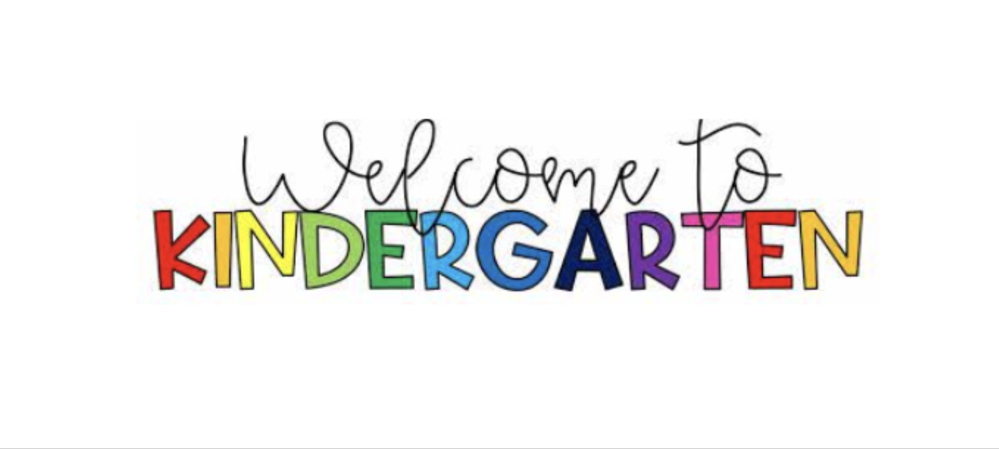
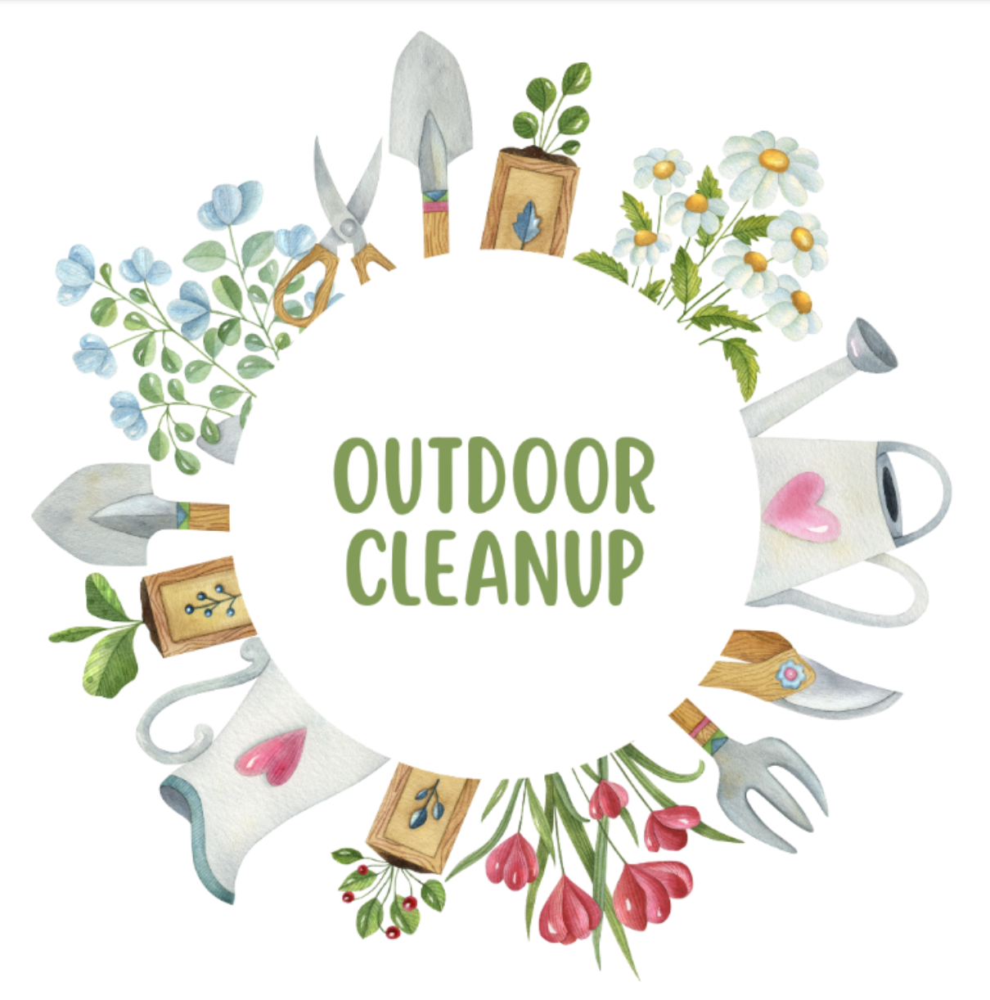
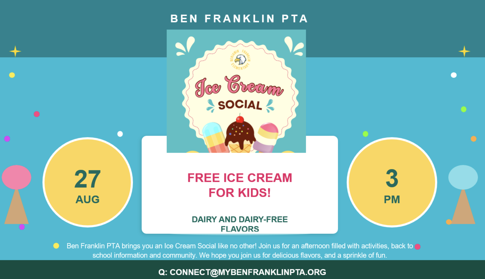

Volunteer
We'd love your help! Volunteer sign-ups are managed through SignUp Genius. Current opportunities are listed below.
Kindergarten Welcome Table — August 12–13

Help answer questions from incoming kindergarten families — things like how to register for school transportation and other back-to-school logistics. Two 2.5-hour slots are needed each day; if those times don't work for you, reach out and we can look at splitting the shifts further.
Campus Clean-Up Party — Tuesday, August 25, 5:00–7:30 p.m.

Kids head back on August 31st, and our campus could use some love before then! We'll be weeding, pruning, planting, sweeping, spreading wood chips, and more — there are jobs for adults and kids alike. If you have them, bring gardening gloves, rakes, brooms, leaf blowers, or yard waste bags (label them with your name). Pizza and treats for all our helpers afterward.
Ice Cream Social — Thursday, August 27, 3:00 p.m.

Help us run the booths at our back-to-school Ice Cream Social — membership sign-ups, spiritwear, a community art activity, and the ice cream booth itself.
Board and Chairperson Positions
We can always use more willing hands! Consider joining our board or chairing one of our many committee positions for the 2026–2027 school year. Not sure what would be a good fit? Reach out to president@mybenfranklinpta.org — we're happy to chat by phone, email, or in person.
See the Board page for more about board roles, or reach out about chairperson positions.